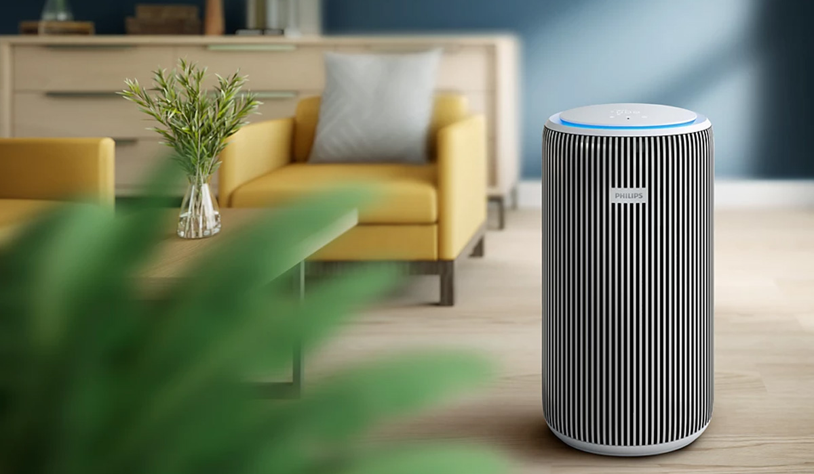
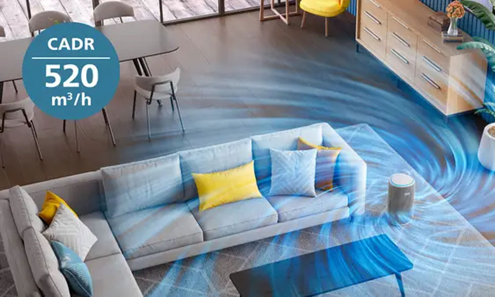
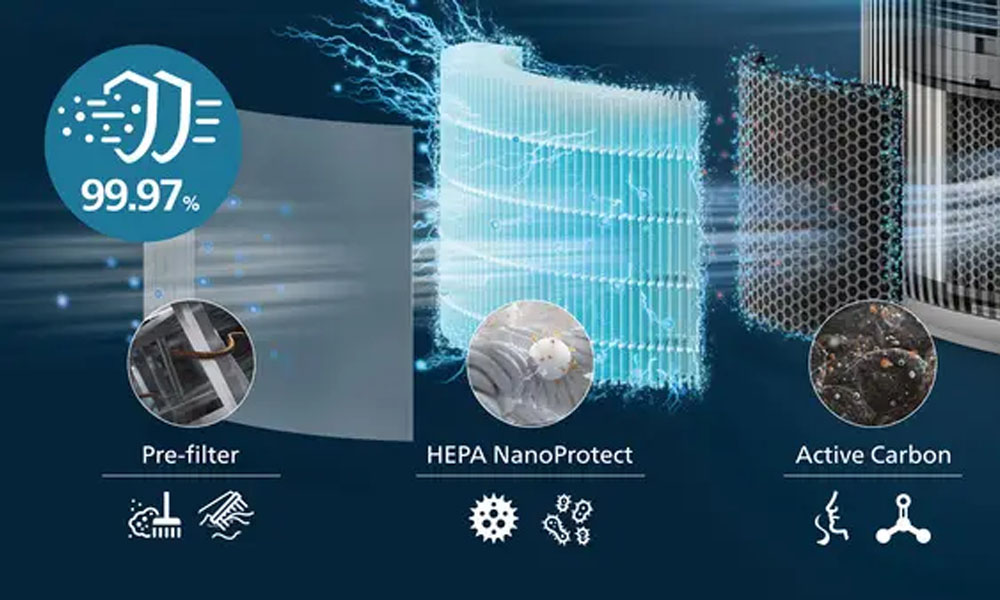
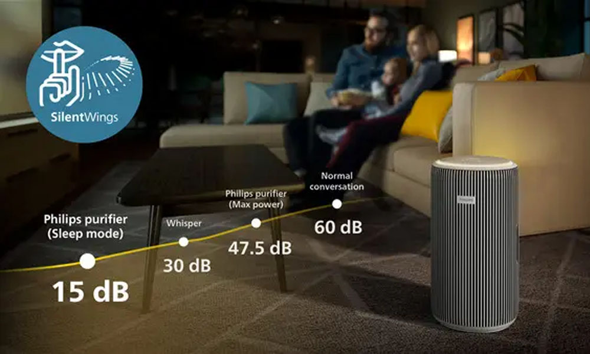
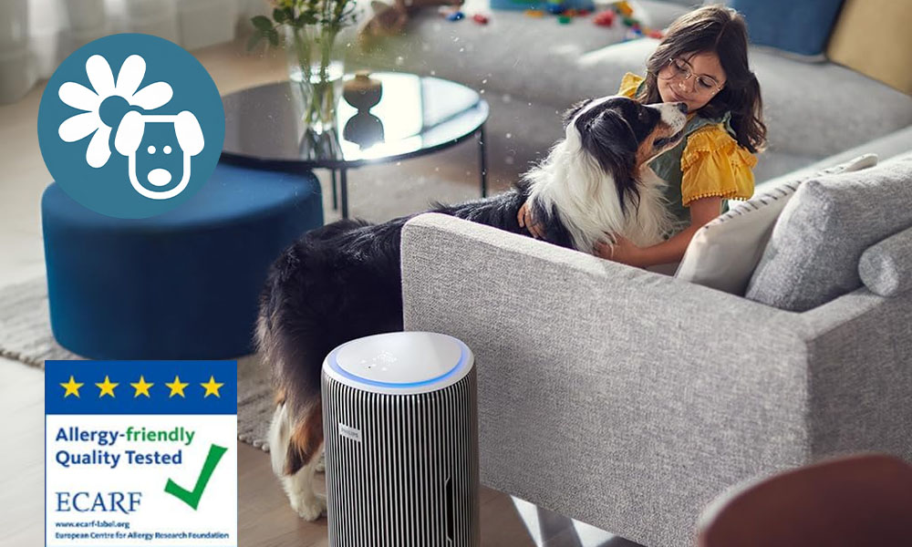
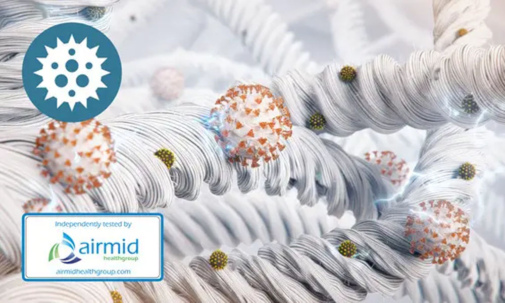
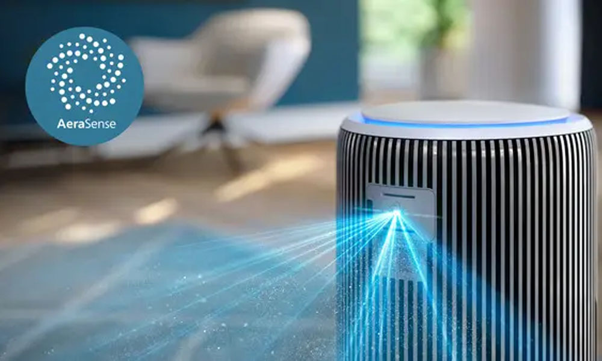
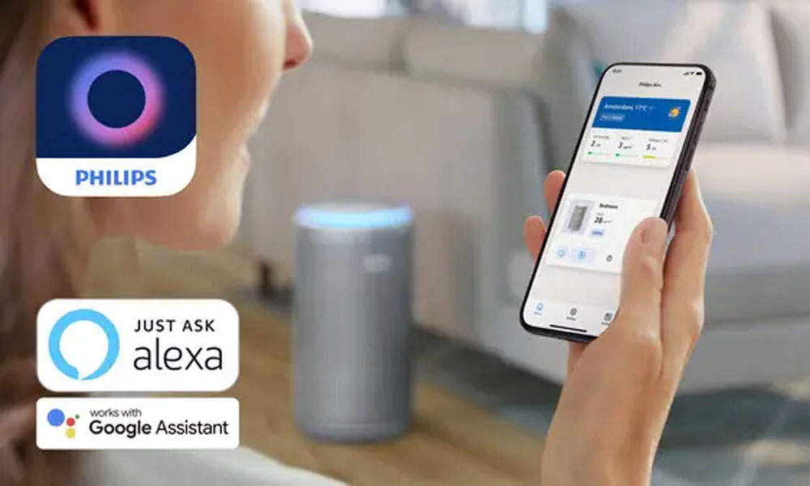
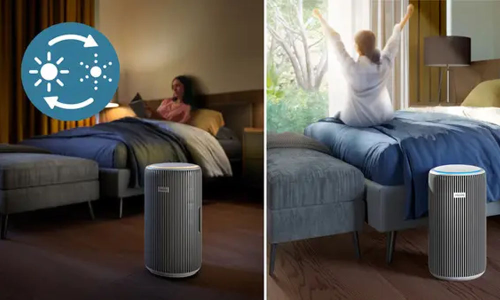
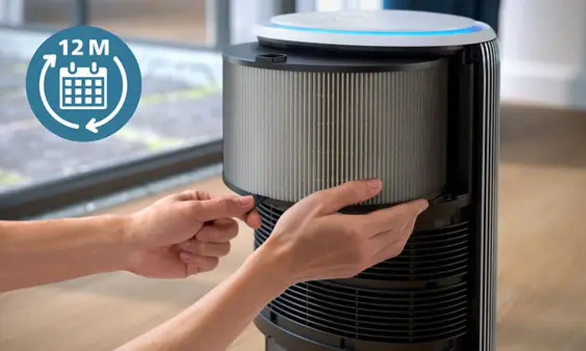
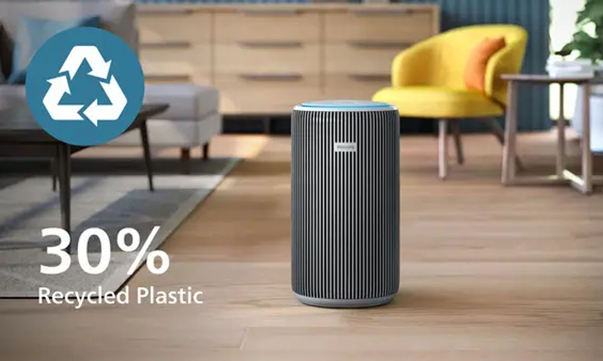
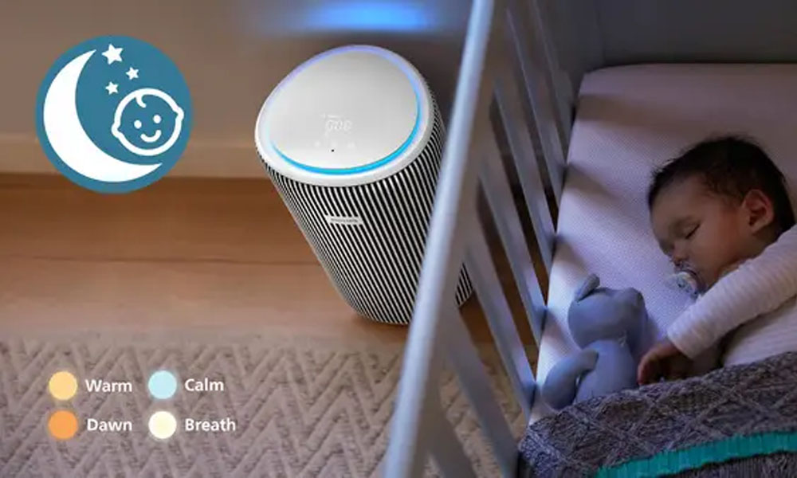
*(1) Önceki model Philips AC3033'e kıyasla (CADR ve ses) *(2) GB/T 18801-2022 standardına uygun olarak CADR testi yapılmıştır. Uygun temizleme alanı NRCC-54013 standardına göre hesaplanmıştır. *(3) Hesaplanan: 48 m3 odada 520 m3/sa CADR *(4) Filtreden geçen havadan, NaCl aerosol 0,003 um ve 0,3 um ile DIN71460 standardına uygun olarak iUTA tarafından test edilmiştir *(5) Ses basıncı, IEC 60704, 1,5 m'de. Normal konuşma: 60 dB. *(6) Filtreden geçen havadan, Avusturya OFI enstitüsü SOP 350.003'e göre ev tozu akarları, huş poleni ve kedi alerjenleri ile test edilmiştir *(7) Allergic Rhinitis and its Impact on Asthma (ARIA - Alerjik Rinit ve Astım Üzerindeki Etkisi) 2008, J. Bousquet ve yaklaşık 50 diğer Kanaat Önderi tarafından yazılmıştır, Allergy 2008: 63 (Ek 86): 8-160 *(8) Airmid Healthgroup Ltd. tarafından influenza (H1N1) ile 28,5 m3 test odasında 30-40 dakika boyunca turbo modu kullanılarak Mikrobiyal Azalma Oranı Testi gerçekleştirilmiştir *(9) GB21551.3-2010 standardına göre S. Albus ile test edilmiştir, 30 m3 oda, 1 saat, Turbo modu, 3. taraf laboratuvar *(10) Mikrobiyal Azalma Oranı Testi, Antimikrop tarafından SARS-CoV-2 ile 30 m3 test odasında 1 saat boyunca turbo modu kullanılarak gerçekleştirilmiştir. *(11) Filtrenin kullanım ömrü hava kalitesine ve kullanıma bağlıdır.